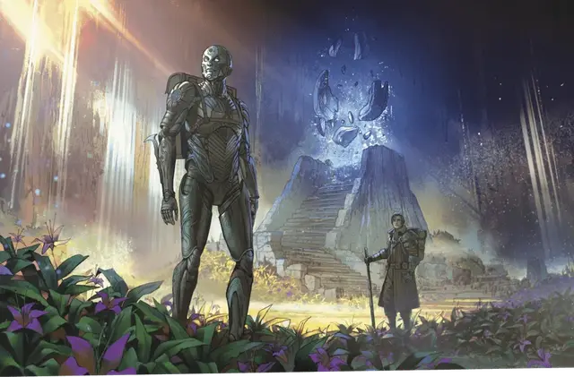

Кованый
Warforged

Тип существа Конструкт
Размер Средний (рост около 6–8 футов) или Маленький (рост около 3–4 футов); выберите при выборе этого вида
Скорость 30 футов
Кованые — это механические существа, созданные как оружие для Последней войны. В результате совершенно неожиданного следствия изменения технологии вместо бездумных автоматонов появились разумные существа, созданные из дерева и металла, но тем не менее способные испытывать боль и эмоции.
Кованые состоят как из органических, так и неорганических материалов. Мускулами им служат похожие на корневища тросы, пропитанные алхимическими составами, оплетающие каркас из стали, темного дерева или камня. Бронированные пластины образуют защитную внешнюю оболочку и прикрывают суставы. Чем больше кованый развивает свою личность, тем больше он склонен изменять своё тело, обращаясь к мастерам и артефакторам, чтобы изменить своё лицо или внешний вид конечностей и брони.
Особенности
Вы обладаете следующими особенностями вида:
Устойчивость конструкта. Вы обладаете Сопротивлением урону Ядом, а также совершаете с Преимуществом спасброски на избежание и окончание состояния Отравленный.
Встроенная защита. Вы обладаете бонусом +1 к КЗ. Кроме того, доспех, который вы надели на себя, нельзя снять с вас против вашей воли, пока вы живы.
Отдых часового. Вам не требуется сон, и магия не может усыпить вас. Вы можете завершить Долгий отдых за 6 часов, если проводите это время без движения и активности. В течение этого времени вы выглядите недвижимо, но сохраняете сознание.
Специальная сборка. Вы получаете владение одним навыком и одним инструментом на ваш выбор.
Неустанность. Вы не получаете уровней Истощения от обезвоживания, недоедания и удушения.